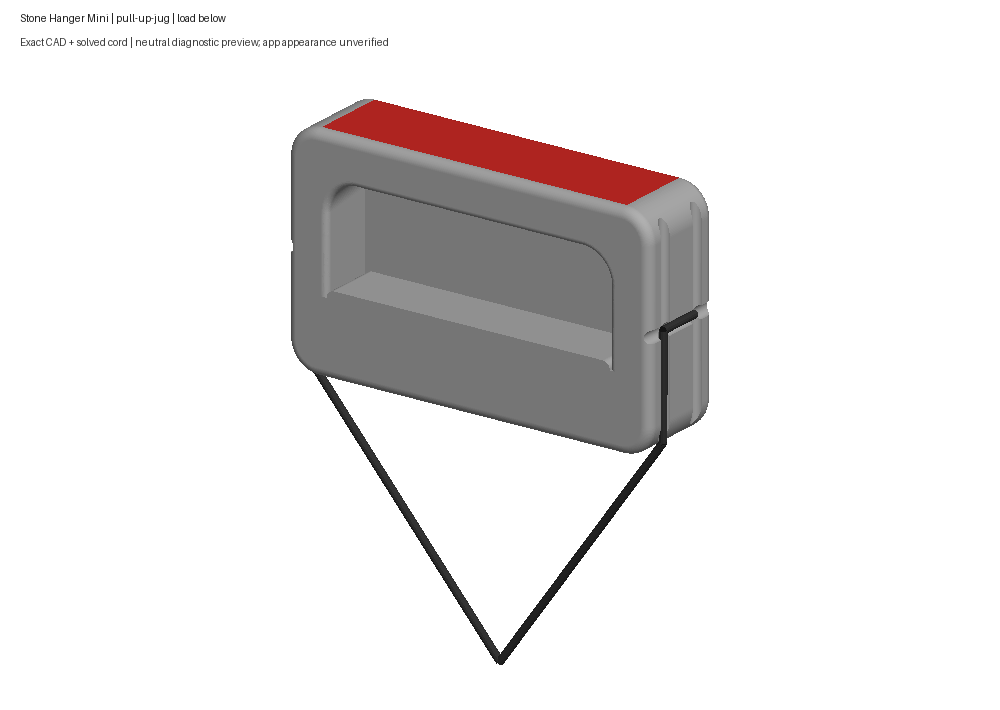
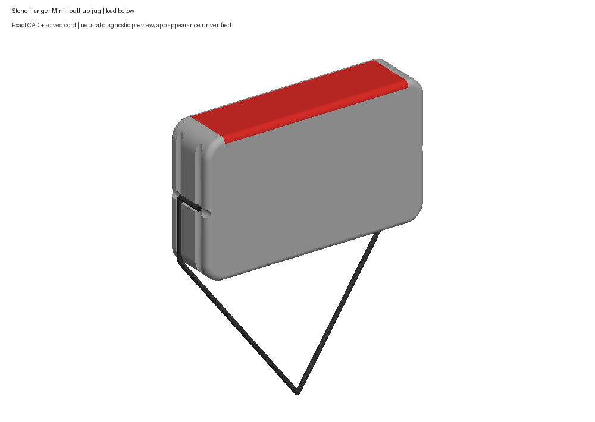
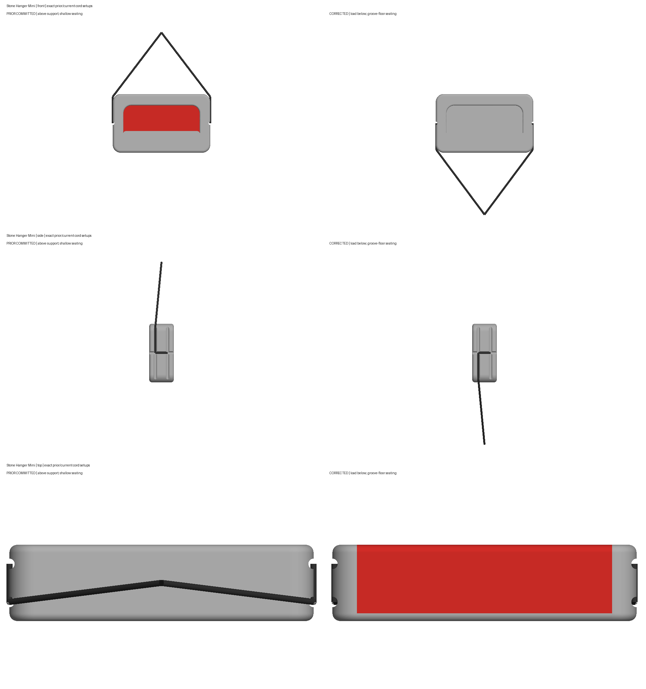
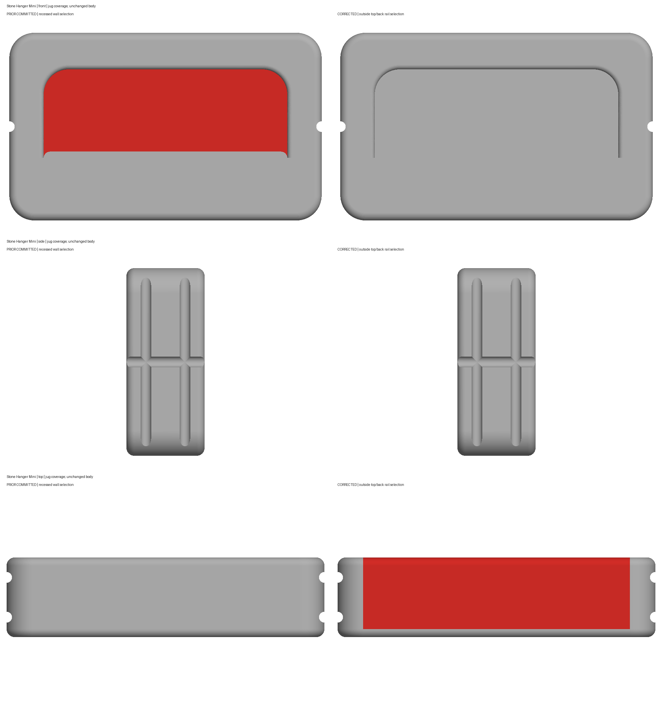
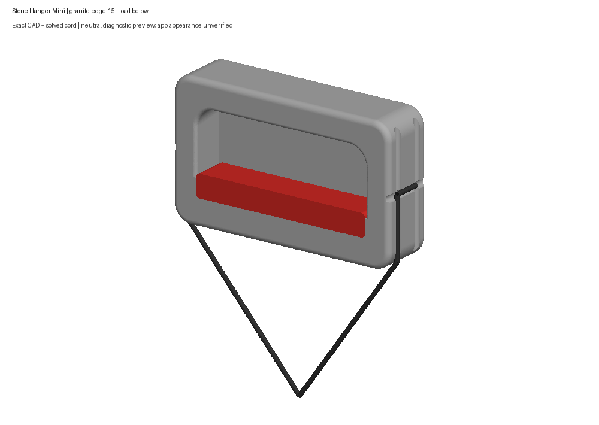
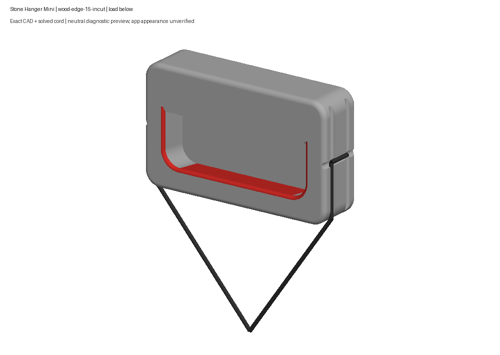

Outside top/back rail jug, shared pinch coverage, and compact cords seated in the side grooves. Human acceptance pending.
Native rebuild, three cord poses, both platform staging checks, 64-package validation and 67 focused final tests pass. These are neutral CAD previews; the corrected model’s app appearance and interaction are unverified.
Scope and estimate limits · Validation · Exact identities · Human feedback history






Does the Mini’s jug and cord look right now?